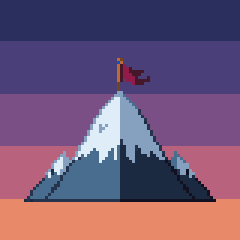

PINNACLE
Privacy policy · last updated 20 November 2026
Pinnacle is a free quiz climbing game played in your browser. This page explains what it stores about you, why, and how to have it removed. There are no ads, no tracking and no analytics, and nothing is ever sold or shared for marketing.
Playing as a guest
- When you open the game you are signed in anonymously, so the game can tell real players apart. This gives your device a random player id; no name or email is attached.
- The name you type for yourself, your rope teams, your answers during a game, your chosen climber and your progress on each mountain are saved in the game's database (Google Firebase), so you and your partner can play together.
- Your settings, your player id and a copy of your progress are also kept in your browser's local storage on this device.
With an account
An account is optional. It lets your progress follow you to other devices.
- Email and password: your email address and an encrypted password are kept by Firebase Authentication. The game itself never sees your password.
- Sign in with Google: Google shares your name, email address and profile picture with the game. The game uses your first name as your climber name if you haven't chosen one, and shows your email on your profile. It does not get access to anything else in your Google account.
- Your account record holds your player id, your climber name, your rope teams, your email address, when you joined, and your climbing statistics (climbs, stars and records).
Leaderboards
When a rope team finishes a climb, the team's climbers' names, the mountain, the time taken and the stars earned can appear on the public leaderboards, where other players can see them.
Services the game uses
- Google Firebase (Authentication and Realtime Database) stores the data above.
- Google Sign-In runs when you choose to sign in with Google.
- Google Fonts supplies one of the game's fonts, so your browser fetches it from Google.
- GitHub Pages hosts the game's files.
These services receive the usual technical details any website does, such as your IP address and browser type, and handle them under their own privacy policies.
Keeping and removing your data
- Signing out leaves your account and its progress in place, and starts a fresh guest on that device.
- Clearing your browser's site data removes everything stored on that device.
- To have your account and everything linked to it deleted, ask through the contact link below and it will be removed.
Children
Pinnacle is a family-friendly game. It does not knowingly collect more than the details above from anyone, and an account is never required to play.
Contact
Questions, or a request to delete your data: open an issue on the game's GitHub page.
Back to the game